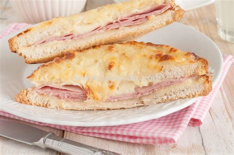

Croque-Monsieur

Description
A croque monsieur is a hot sandwich made with ham and cheese.
The dish originated in French cafés and bars as a quick snack.
Ingredients
- 1 tablespoon Dijon mustard
- 2 tablespoons mayonnaise
- 4 tablespoons butter or margarine, softened
- 6 slices white bread
- 6 slices Swiss cheese
- 12 slices thinly sliced deli ham
- 4 tablespoons all-purpose flour
- ½ teaspoon baking powder
- ¼ teaspoon salt
- 2 eggs
- ¼ cup water
- 1 tablespoon vegetable oil
Steps
-
Use 2 tablespoons of the butter to spread over one side of each slice of bread.
On three of the slices, spread a layer of Dijon mustard over the butter, and top each with 4 slices of ham.
On the other three, spread mayonnaise, and top each one with 2 slices of Swiss cheese.
Press ham and cheese sides of sandwiches together.
-
In a flat bottomed dish, whisk together the flour, baking powder, salt, eggs, and water until blended. Set aside.
-
Heat remaining butter and vegetable oil in a large skillet over medium heat.
Dip both sides of each sandwich in the egg mixture, and fry in the oil and butter until browned, flipping to brown on each side.